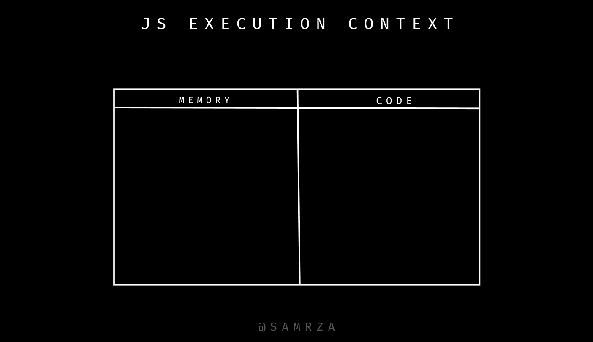

JavaScript is the duct tape of the Internet. — Charlie Campbell
Everything in JS happens inside Execution Context.
but what the hell is execution context, given diagram below is execution
context
it has two parts
memory creation phase : aka
Variable Environment
code execution phase : aka Thread of Execution

on internet or in interview question you heard of - is JavaScript synchronous or asynchronous, single-threaded or multi-threaded language ??
Answer : By Default JavaScript is
synchronous and single-threaded language.
but what does this mean -
synchronous : line by line , wait for previous line to finish then next
line ( aka top to bottom )
single-threaded : it can execute one line at a time not multi.
Important :
JavaScript can also handle asynchronous operations using callbacks,
promises, async/await, etc. This happens with the help of the JavaScript
runtime environment and the event loop.
but don't stress about this now , we will explain in very simple in future articles.
move to JavaScript 101 - Part 2 →